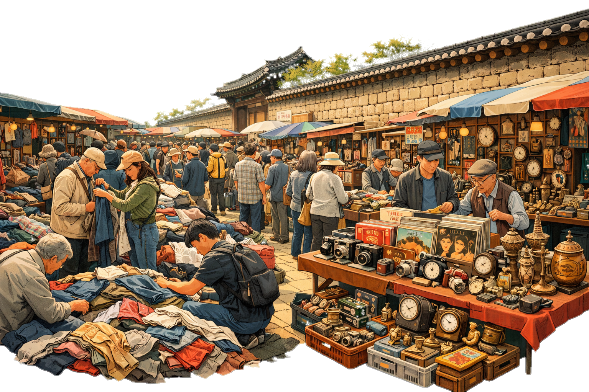

동묘 벼룩시장 완전 정복 가이드:
종로구 골목의 맛과 즐길 거리
서울 종로구 동묘 벼룩시장의 구제 의류 쇼핑 요령, 3,000원 토스트·고기튀김 노포 맛집, 주말 방문 시간과 흥정 팁을 소개합니다.

1. 어르신들의 쉼터에서 글로벌 빈티지 패션 성지로
지하철 1호선과 6호선이 만나는 동묘앞역 3번 출구로 나오면, 동관왕묘(동묘)의 고즈넉한 돌담을 따라 끝없이 펼쳐진 노점과 구제 옷가게들이 시선을 사로잡습니다. 과거에는 청계천 황학동에서 밀려난 골동품과 중고 생활용품을 팔던 어르신들의 공간이었지만, 지금은 국내외 패션 학도와 빈티지 마니아들이 보물을 찾아 모여드는 서울만의 독보적인 문화 거리로 변모했습니다.
동묘의 가장 큰 매력은 정해진 가격표 없이 자신의 안목과 발품으로 세상에 하나뿐인 아이템을 찾아내는 즐거움에 있습니다. 아날로그 카세트 플레이어, LP 레코드, 오래된 필름 카메라부터 1990년대 해외 브랜드 재킷까지 시간의 흔적이 고스란히 쌓여 있습니다.
2. 실패하지 않는 구제 의류 '보물찾기' 공략법
동묘 거리는 크게 두 가지 쇼핑 구역으로 나뉩니다. 첫째는 골목 한가운데 산처럼 쌓인 '옷더미 노점'입니다. 보통 한 벌에 2,000원~5,000원 수준으로 아주 저렴하지만, 상태가 천차만별이므로 목 둘레나 소매, 지퍼 작동 여부, 세탁으로 지워질 얼룩인지를 꼼꼼히 살펴야 합니다.
둘째는 골목 안쪽의 '상설 빈티지 샵(행거 매장)'입니다. 옷더미보다 가격대(1만~5만 원대)는 조금 높지만, 상인들이 이미 한 차례 분류하고 세탁·다림질을 마친 가죽 재킷, 데님, 코트를 깔끔하게 입어보고 고를 수 있어 초보자에게 추천합니다.
3. 쇼핑 뒤 허기를 달래는 동묘 골목 가성비 노포
발품을 팔다 보면 자연스레 고소한 기름 냄새가 발길을 붙잡습니다. 동묘 앞 도로변과 뒷골목에는 수십 년째 자리를 지키는 가성비 최고의 서민 식당들이 많습니다. 바삭한 고기튀김과 비빔국수를 함께 파는 노포부터 철판 위에서 마가린으로 구워내는 길거리 토스트, 진한 멸치 육수의 잔치국수까지 주머니 가벼운 여행객들에게 든든한 한 끼를 선물합니다.
한눈에 보는 방문 핵심 정보
| 위치 · 지하철 | 서울 종로구 숭인동 102-8 일대 · 1·6호선 동묘앞역 3번 출구 |
|---|---|
| 영업시간 | 노점·빈티지 상가 10:00 ~ 18:00 (해 질 무렵 빠르게 철수) |
| 최적 방문 요일 | 주말(토·일요일) 오후 1~4시 가장 많은 노점 형성 (평일은 상설 점포 위주) |
| 대표 먹거리·시세 | 고기튀김(4,000원~), 옛날 길거리 토스트(3,000원~), 잔치국수(5,000원~) |
| 준비물 팁 | 현금·계좌이체, 장갑/물티슈(옷더미 탐색용), 큰 에코백 |
동묘 벼룩시장 오후 산책 코스
- 오후 1시 30분 · 동묘앞역 3번 출구 & 동묘 돌담길: 먼저 골동품, LP판, 중고 카메라 노점을 구경하며 동묘 특유의 분위기를 느낍니다.
- 오후 2시 30분 · 빈티지 골목 및 옷더미 탐색: 메인 골목과 좌우 샛길을 돌며 내 취향에 맞는 빈티지 의류를 발굴합니다.
- 오후 4시 30분 · 청계천 & 서울풍물시장 연계: 동묘 골목 맛집에서 토스트·고기튀김으로 요기한 뒤 청계천을 건너 도보 5분 거리의 서울풍물시장까지 함께 구경합니다.
자주 묻는 질문 (FAQ)
Q. 동묘 벼룩시장은 비 오는 날에도 열리나요?
야외 노점 비중이 큰 곳이라 비가 많이 오는 날에는 상당수 노점이 쉬고 실내 상설 빈티지 매장만 문을 엽니다. 맑은 날 주말 오후에 방문하는 것이 가장 좋습니다.
Q. 구제 옷을 살 때 현금이 꼭 필요한가요?
노점은 현금이나 계좌이체 위주로 거래되므로 1,000원·5,000원권 소액 현금을 미리 준비하면 흥정과 계산이 훨씬 수월합니다.